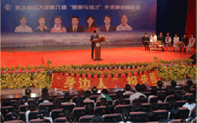
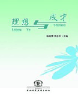

报告团简介东北师范大学“理想与成才”报告团简介专栏

东北师范大学“理想与成才”报告团是对学生进行典范教育的主要载体，是学校多年来摸索出的一条引导学生成长成才的主要途径。1996年至今，学校已成功组建十六届“理想与成才”报告团，共选拔出151名优秀学生典型，他们在追求理想的道路上不懈奋斗的精神影响和感染了一批又一批东师学子……
感悟“理想与成才”

每当坐在台下听“理想与成才报告团”的报告时，看着他们那一张张青春洋溢的脸，我想知道，飞扬的理想将把这些年轻人引领向何方？“身边人讲述身边事，身边事影响身边人”，即使他们已经飞向广阔的天空，我仍然满怀欣慰。希望同学们以这些报告团成员为榜样，从他们的事迹中得到激励和启发，在追求理想的过程中，刻苦学习，不断进步。这也是我们编辑此书的宗旨所在……
历届成员
东北师范大学党委学生工作部·学生处